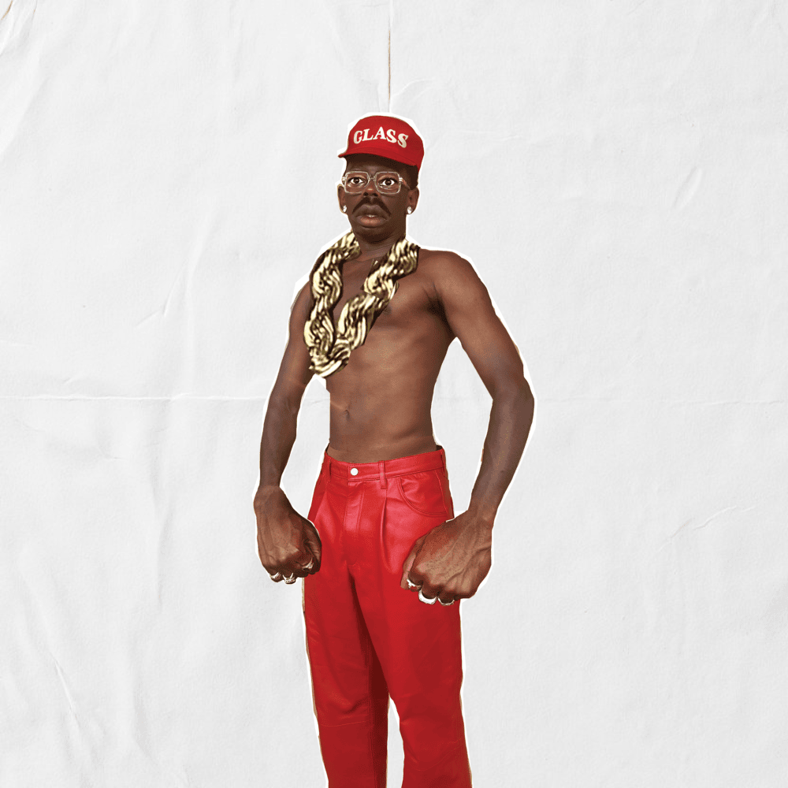
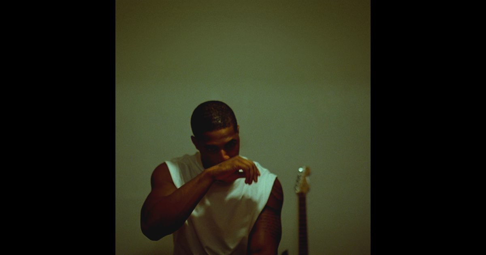

Sometimes I wish I could go back and live 10-15 years ago when it seemed like music was in it's prime. Compared to legendary projects such as Frank Ocean's "Blonde" and "Channel Orange", Mac Miller's "The Devine Feminine", and anything from Kanye's early discography, many releases of today seem just alright at best. However, among the mediocrity, some albums relesased in 2025 still have that special stuff.
Now, before I get into my top three, there are a few things that should go without saying:
One, music taste is reletive. You might get hurt that Sabrina Carpenter and Taylor Swift don't make this list, but that's just not how I roll. It seems pretty obvious, but what you like might not be what I like and what I like might not be what you like.
Two, these albums aren't the only three albums I liked this year (yes, I know I just said a lot of music this year was mid, but come on I'm not that picky). These are just the cream of the crop.
Finally, if you semll a little bit of bias within these rankings, you're probably right. Truth is I have some artists I love, and their projects are more likely to make this list. But that isn't the only criteria (I'll have you notice that "Balloonerism" doesn't make this list... sorry Mac) In fact, one of the artists you will soon read about was only discovered by me after I discovered this new album.
Now that that's out of the way, let's jump right in.
3. "DON"T TAP THE GLASS" - Tyler, the Creator
Tyler, the Creator's newist Album came as a little bit of a shock to a lot of his fans. With his last project, "Chromakopia", releasing just last year, most fans weren't expecting another release so soon.
 "I had to protect my heart and build a wall so tall, I couldn't look over"However, to our excitement, "DON'T TAP THE GLASS" released July 21st, 2025 with only a few days notice. While some artists will announce a project months before its release, and sometimes never even release it, (Yes Ye I'm talking about you), Tyler surprised us completely out of the blue with a fantastic project.
I'll admit, this album took a couple runthroughs to get a grasp on how I really felt about it. Being one of his shorter projects, this didn't take much time. However, each time I listened to it I loved it more and more. While I would say it is one of Tyler's more unique projects, I think it accomplishes what he wanted it to in a wonderful way. ALong with its release, Tyler explained that to listen to this album you had to follow a couple rules. The first of these rules is "Body movement. No sitting still.", meaning that the music in this album is meant to get you moving and be danced to. And if "Ring Ring Ring" doesn't at least get your foot tapping, something might be wrong with you.
Among the upbeat, "get you grooving" tracks like "Ring Ring Ring", "Sucka Free", and "Sugar On My Tongue", this album is also infused with tons of emotion. One of my favorite tracks, "Tell Me What It Is", beautifully talks about the struggles of finding companionship and love in today's world.
With all that being said, this project isn't flawless. I will skip "Mommanem" every time I listen to this project till the day I die. But as far as production, writing, and performance, this album easily made it into my top three this year and will continue to be a frequent listen for me into the future.
2. "To Dry a Tear" - Khamari
Alright, here is my more "underground" pick, if you could call it that. However, I firmly believe that this album is slowly bringing Khamari more and more into the limelight. "To Dry a Tear" (released August 22nd) is only his second studio album, and it is filled with some of the most beautiful music I have ever heard. If you are looking to fill a Frank Ocean sized whole in your heart, look no further.
I was first exposed to this album when its most popular track, "Head in a Jar", popped up on a random shuffle of mine. Simple and eloquent, I knew I had to experience anything else that this artist put out. I was soon exposed to the gorgeous simplicity of this album, with many tracks relying on just a few instruments and Khamari's vocals to fill the songs with emotion.
 "I swear there's a planet out there, a heavenly home, where I'll carve my name in the stone"The last track to the album, "Apollo Eighteen", has to be my favorite of the project. When I first listened to it alone in my room, it filled me with emotion that only a few other songs have in my life. It talks about the difficulties of discovering the world for yourself, and how that journey to find a better life can often be long and lonely. And that song isn't the only one that is emotion filled. "Sycamore Tree", "I Love Lucy", and "Close" all explore feelings of love, longing, and even sadness that will undoubtedly cause the listener to reflect and pnder.
It would be hard for me find much criticism for this album, but I will say if you aren't a fan of softer, simple music than this project might not be for you. However, I feel its simplicity is what makes it so beautiful and allows listeners to be fully enveloped in the emotion of the music.
1. "Son of Spergy" - Daniel Caesar
If any of you reading this know me, you know that Daniel Caesar holds a special place in my heart. I feel that he is one of the only artists I know where it seems there is not a single skip in his whole discography, and this album just adds to that fact. Daniel didn't miss with a single one of these tracks, and the production, meaning, and cohesion are unmatched.
"I'll probably be a waste of your time - but who knows?"This album dives deep into Daniel's relationship with his father (the Spergy he is son of, if that wasn't obvious enough), and how he eventually becomes more like him than he first realizes. It is also about his internal grapple with spirituality and self-discovery. THe tracks are put together in a way that flawlessly paints a story of loss, rebellion, discovery, and acceptance that all of us go through in one way or another.
Asking me to pick a favorite track from this album is like asking the Dallas Cowboys to win another super bowl: it might just be impossible. However one that stuck with me early on was "Root of All Evil". Along with its catchy beat and melodic gutiar underlick, the song explains Daniel's (and I'd venture to say many of our) struggles to break away from mistakes he continually makes throughout his life, saying: "I know I should stay away, but I can't - Proclivity to evil"
Every single track causes you to reflect on your own journey through life and the inevitable blessings and obstacles you will face. "Sign Of The Times" talks about the beauties of new-found love. "Emily's Song" talks about the sturggles of losing that love. "Sins of the Father" talks about the ultimate destination of self acceptance throughout the pain of life through the grace of God.
Conclusion
While there is so much music out there, and so much yet to come, these albums have left a lasting impact on me this year. Ultimately, what these albums teach me the most is that good music, really good music, doesn't just sound good. It makes you feel, makes you think, and makes you feel emotions you couldn't without it. Whether it's joy, sadness, love, or pain, emotions are what make life worth living and I'm not sure we could ever feel the fullness of these emotions without music.
Image links provided by Spotify · Images found on web